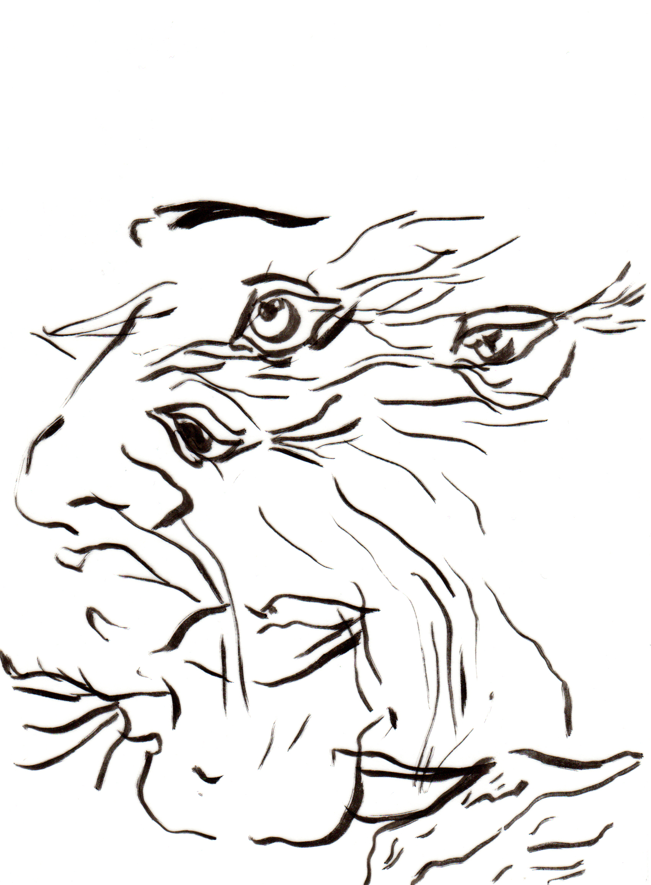
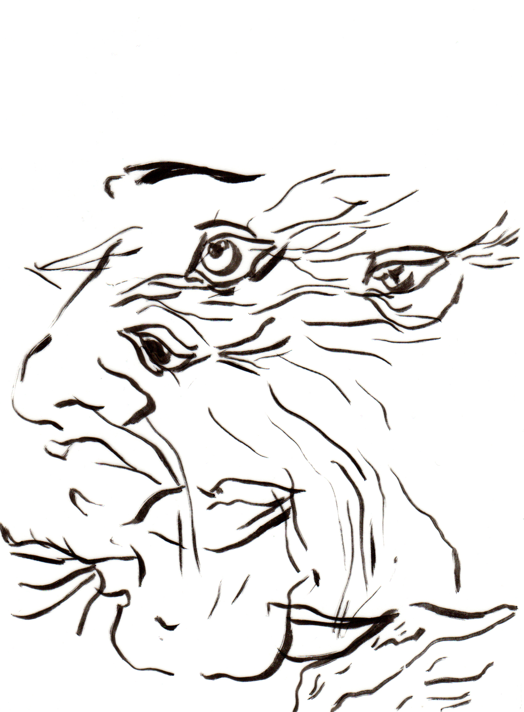

CEUX QUI RESTENT – THOSE WHO REMAIN
When my friend Amaury Vanderborght, acrobat, came to me with this idea, I was thrilled ! He was working on the theme of collective and intimate memory, and wanted to explore this subject in a visual way, beside the show he is preparing in 2017.
"Ceux qui restent" is an ongoing documentary project, using different mediums. Whether it is visual arts, cinema, acrobatics that we use, the core is always testimonies of old people. We want to collect and transform this fragile individual memories, that are meant to disappear.
Film & Workshop
In november 2016, we did a workshop in Paris with Maif Social Club. The result is a short film. Here is the trailer ! Check out the event page !


Installation
During the "Match" exposition at Bozar on may 7th 2016, we presented a first installation version. As a film of different testimonies was screened, I was drawing on top of the projection using tracing paper and ink, and Amaury was retyping what was said in the film. The result was a room filled in papers, quotes and drawings. It was a first draft, and we were not satisfied with it. The search continues.


 


Series
We decided to make a short 12 episodes series out the testimonies we gathered so far. One episode, one person. First episode is already out ! Stay tuned for more !

Permalink to this page